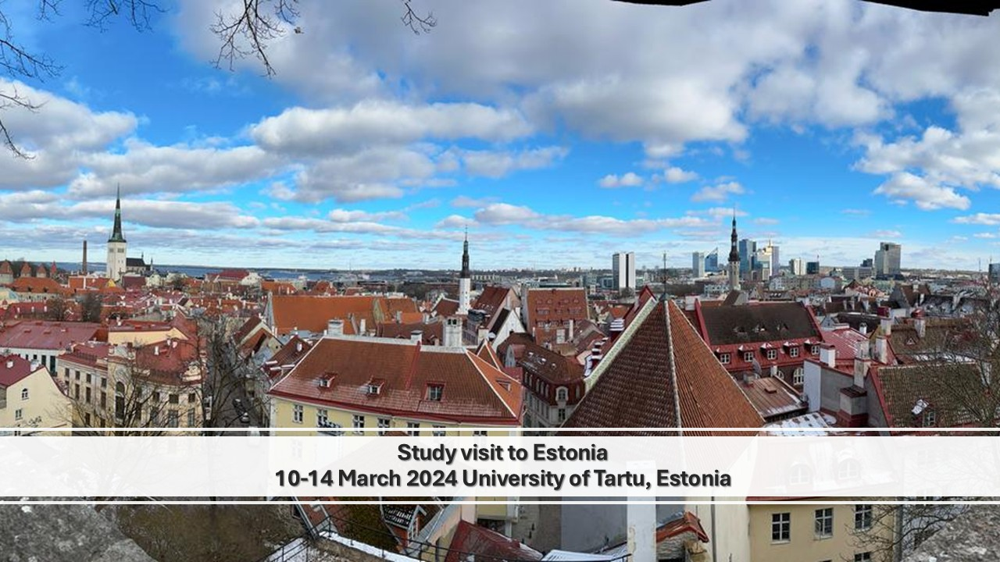
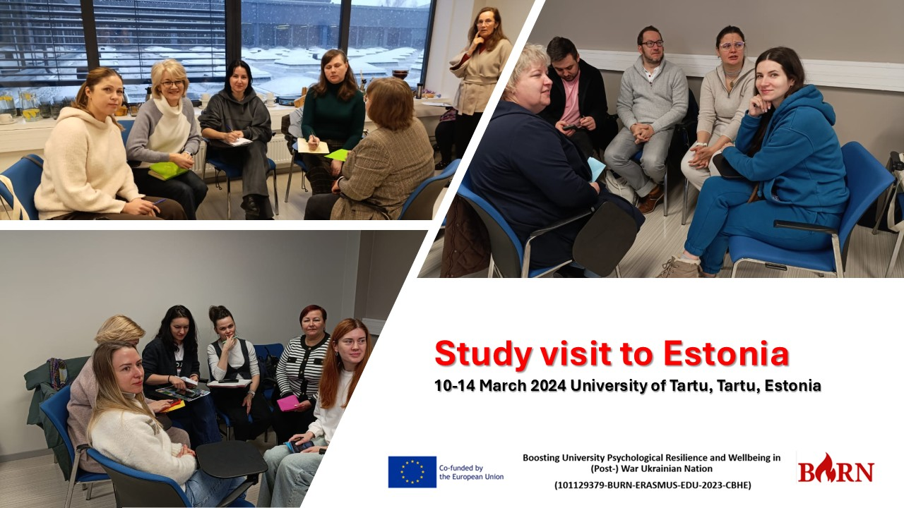
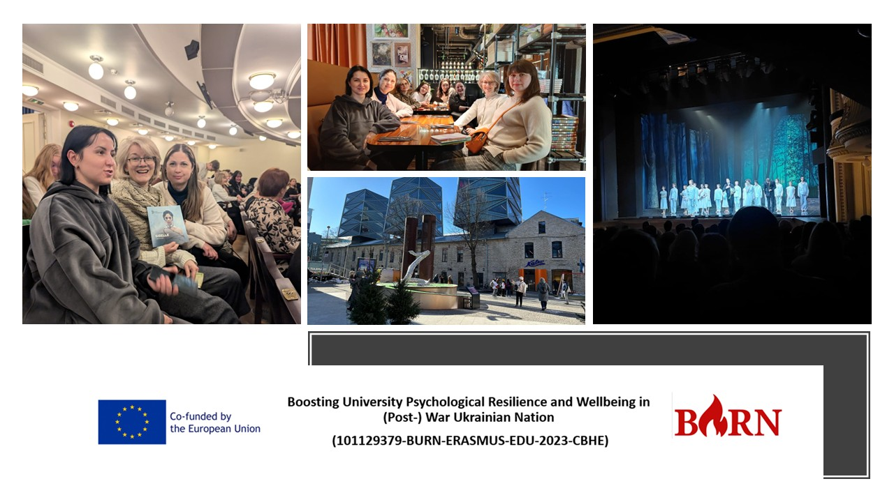
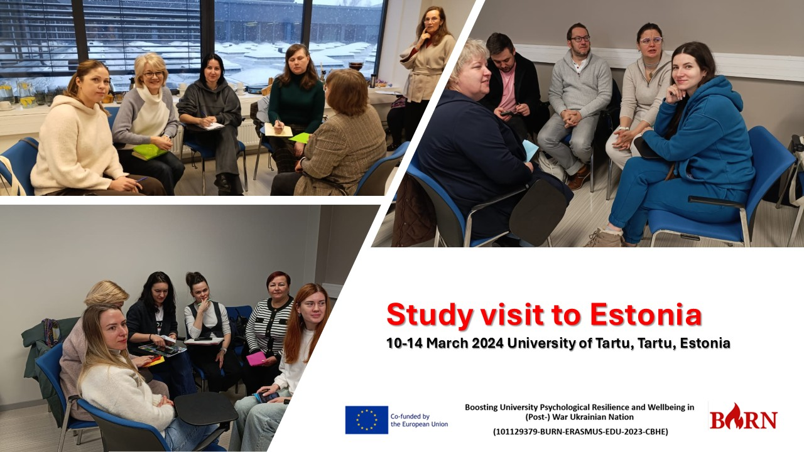
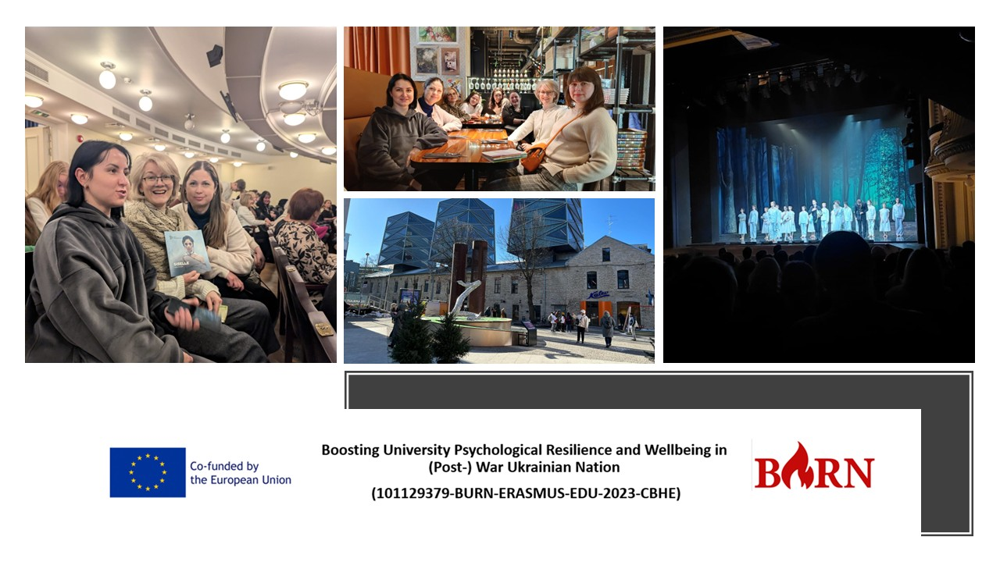
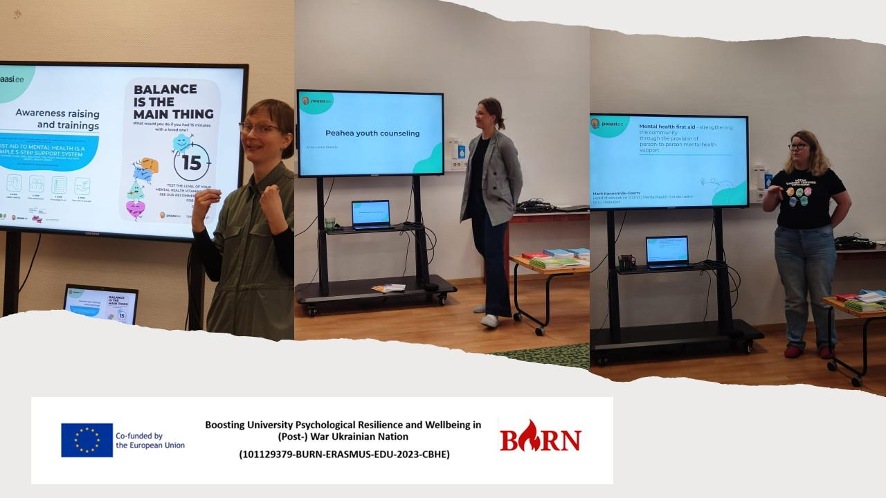
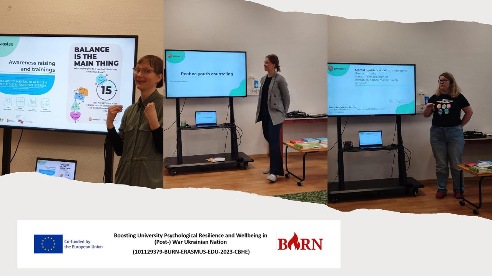
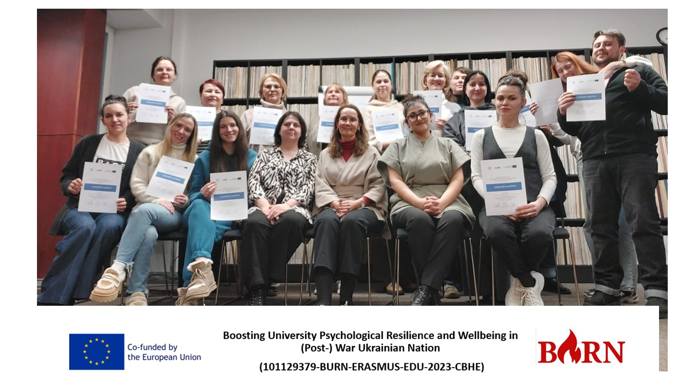

Study Visit to Estonia: Workshop on Psychologist’s Professional Development (Tallinn, March 13-14, 2025)
University of Tartu Counselling Centre & Peaasi, TallinnAnother enriching experience unfolded as we delved into the professional development of psychologists, emphasizing self-care, self-reflection, and empowerment.
Key Highlights:
- Creative Therapy Workshop – Led by Anu Leuska, psychologist at the Counselling Centre, this session focused on innovative self-care strategies for mental health professionals.
- Exploring the University of Tartu Counselling Centre – With Anne Tullus, we toured the Centre, gaining deeper insights into its work approaches, rooms, and facilities.
- Reflection & Q&A Session – Facilitated by Kristel Lään-Saarik and Sharipha Rzayeva, this session allowed participants to process key takeaways and exchange thoughts on psychologist self-care.
- Visit to Peaasi’s Main Office in Tallinn – Introduction to Peaasi’s mental health initiatives, including their mental health first aid course and support services.
- Cityscape as Art Therapy – A guided tour around Tallinn Old Town, led by Oleksandra Golovko, providing a hands-on experience in using urban spaces for therapeutic reflection.
- Experiencing Art Therapy in Action – Engaging in interactive art therapy techniques and sharing reflections on its impact.
- Visit to the Estonia Opera House – A unique setting to discuss the intersection of art, music therapy, and psychological well-being with Kadri Pahla.
 



 

Key Takeaways from the Study Visit:
- A complex and deeper understanding of the Counselling Centre’s methodologies and services.
- Strengthened a multidisciplinary approach to trauma perception and supervision.
- Explored music therapy and art therapy as powerful tools for psychological healing.
- Enhanced skills in supporting trauma survivors through creative therapeutic approaches.
- Developed fresh ideas for structuring psychological support services.
This visit reinforced the importance of self-care and continuous professional growth for psychologists. A heartfelt thank you to all the experts, facilitators, and participants who contributed to this insightful and transformative experience!
